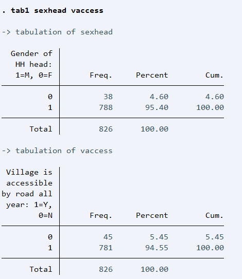

Topics Covered in This Training
- Data Management in STATA: Importing data, cleaning data, creating new variables, and labeling variables.
- Descriptive Statistics:
- Frequency tables
- Summarizing data using mean, median, and standard deviation
- Histograms, bar charts, and pie charts
- Hypothesis Testing:
- Test of means (t-test)
- Proportion tests
- Chi-square tests
- Linear Regression Analysis:
- Simple linear regression model
- Multiple regression analysis
- Interaction terms and their interpretation
Introduction
STATA is a statistical software designed for:
- Data manipulation or manage data,
- Graphics or data visualization, and
- Conduct data analysis.
To launch STATA, go to the start menu and find STATA from the list of programs installed on your computer and click on it.
[Note:Software installation steps will be shown to participants during the actual training session]
STATA has different windows including:
- Command Window: Where commands are entered
- Results Window: Displays the output of commands
- Review Window: Shows a history of commands
- Variable Window: Lists the dataset variables
- Properties Window: Shows the properties of variables

Flavors of STATA
STATA 17 comes in different flavors:
- Basic edition (Stata/BE),
- Special edition (Stata/SE), and
- Multiprocessor (Stata/MP).
To explore the features of different STATA flavors, for instance, type the command:
help limits
This command shows the capacities of Stata/BE, Stata/MP, and Stata/SE.
Basic Commands
1. help
The help command provides access to STATA's built-in help documentation. It's useful when you need to learn more about a specific command or feature.
help summarize
This will display help for the summarize command.
2. search
The search command looks for specific information within the STATA help files and other resources. It's broader than help.
search regression
STATA will return results related to regression commands and topics.
3. pwd
The pwd command prints the current working directory. It's useful to know where STATA is currently looking for files.
pwd
This will output something like C:/Users/YourName/Documents/STATA/.
4. cd
Use cd to change the current working directory in STATA. This is important when you want STATA to look in a different folder for data files.
cd “C:\Users\user1\Desktop\STATA Training”
5. import
STATA can import data from different file formats using the import command. For instance, to import an Excel file:
import excel "hh_91.xls", sheet("Sheet1") firstrow
This imports data from "Sheet1" of the Excel file and treats the first row as variable names.
If the data type is of csv format, the data can be imported using the import delimited command:
import delimited "hh_91.csv"
If the data type is, however, a STATA data type (.dta), the use command should be used to open the files.
use "hh_91.dta", clear
To view the summary of the data, the describe command is one option that can be utilized in STATA. The command produces a summary of the dataset in memory or of the data stored in a Stata-format dataset.
describe
6. edit
The edit command opens the Data Editor in edit mode, allowing you to modify data manually.
edit
This opens an interactive window to edit your dataset.
7. browse
The browse command opens the Data Editor in read-only mode. You can view, but not change the data.
browse
8. merge
To combine datasets based on one or more key variables, use merge. You can specify whether the merge is 1:1 or 1:many.
merge 1:1 id using "dataset2.dta"
This merges two datasets based on the variable id.
9. append
Use the append command to add observations from another dataset to the current one. It's like stacking datasets.
append using "dataset2.dta"
This adds the rows of dataset2 to the current dataset.
10. generate
The generate command creates new variables. For instance, to create a new variable for age in months:
generate age_months = agehead * 12
11. egen
The egen command is more advanced than generate and allows for group-level calculations or other complex operations.
egen mean_fsize = mean(famsize), by(villid)
This generates the mean family size for each village.
12. rename
To change the name of a variable, use rename.
rename weight samplewt
This renames the variable weight to samplewt.
13. drop
Removes variables or observations from the dataset.
drop if agehead > 50
This drops all observations where age is greater than 50.
14. keep
Keeps only the specified variables or observations.
keep if famsize <=15
This keeps only observations where income is greater than 1000.
15. clear
Clears the current dataset from memory. Useful when you want to load new data.
clear
16. encode
Converts string variables into numeric categorical variables.
encode gender, generate(gender_num)
This converts the string variable gender into a numeric variable gender_num.
17. decode
Converts numeric categorical variables back to strings.
decode gender_num, generate(gender_str)
This converts the numeric variable gender_num into a string variable gender_str.
18. replace
Replaces the values of existing variables.
replace income = 0 if income < 0
This replaces negative income values with 0.
19. label var
Attaches a label (up to 80 characters) to a variable.
label var sexhead "Sex of the household head"
This replaces the variable description.
20. label define
Creates a value label, which is a set of individual numeric values and their corresponding labels. For instance, for sexhead:
label define sex 1 "Male" 2 "Female"
This creates the value label named sex.
21. label val
Attaches a value label toa variable of your interest. For instance, for sexhead:
label val sexhead sex
This attaches the value label named sex to the variable sexhead.
Operators in STATA
| Operator |
Meaning |
| < |
Less than |
| <= |
Less than or equal |
| == |
Equal |
| > |
Greater than |
| >= |
Greater than or equal |
| ! |
Not |
| ~ |
Not |
| != |
Not equal |
| & |
And |
| | |
Or |
| + |
Addition |
| - |
Subtraction |
| * |
Multiplication |
| / |
Division |
| ^ |
Power |
Descriptive Statistics
For categorical variables, tab1, tab2, and tabulate commands can be used to produce one way and two frequency tables.
tab1 produces a one-way tabulation for each variable specified after the command.
tab2 produces all possible two-way tabulations of the variables specified after the command.
Example: The following lines of codes produce different results:
tab1 sexhead vaccess

tab2 sexhead vaccess
tab2 sexhead vaccess, col
tab2 sexhead vaccess, row
Summarizing Numeric Variables
For numeric variables, the summarize command calculates and displays a variety of univariate summary statistics. It is used to produce summary measures such as mean, standard deviation, minimum and maximum scores of a quantitative data. For the age and level of education for our data, these measures can be produced as:
summarize agehead educhead

Charting Numeric Variables
For numeric variables such as age, histrogram can be used to display the distribution pictorially. The command histogram produces the chart. Please note the optional parts of the command (such as title, xlabel, ylabel, xtitle, and ytitle) shown below.
histogram agehead, frequency title("Distribution of Age") xlabel(15(5)75) ylabel(, grid) xtitle("Age (years)") ytitle("Frequency")
Box plots are useful in summarizing a numeric variable.
graph box age, title("Boxplot of Age") ytitle("Age")
If you want to produce a horizontal boxplot, you need to use the following command
graph hbox age, title("Boxplot of Age") xtitle("Age")
Density Plots
Density plots can also be generated for numeric variables, offering a smooth, continuous curve that eliminates the jagged appearance seen in the histogram above.
kdensity exptot, title("Distribution of hh expenditures")
Density plots are helpful in making comparisons of distributions across populations or categories. The following graph displays a comparison of the total household expenditure across the sex of the household head
twoway (kdensity exptot if sexhead==0) ///
(kdensity exptot if sexhead==1), ///
title("Distribution of hh expenditures" ///
"by sex of the household head") ///
ytitle("Density") xtitle("HH expenditure") legend(label(1 "Female") label(2 "Male"))
Another useful way of comparison for distribution across groups is the use of boxplot.
graph hbox exptot, over(sexhead) title("Total Expenditure by Household Head's Sex") ylabel(, angle(0)) ytitle("Total Expenditure")
Charting Categorical Variables
For categorica variables such as sex, bar chart can be used to display the distribution pictorially. The command graph bar produces the chart.
graph bar (count), over(sex) title("Distribution of Sex of the Household Head") ytitle("Number") blabel(bar, position(outside) size(small))
Altenatively, a percentage distribution can be plotted on the bar chart instead of counts.
graph bar (percent), over(sex) title("Distribution of Sex of the Household Head") ytitle("Percent") blabel(bar, position(outside) size(small) format(%4.1f))
NOTE: After producing the chart, the chart needs to be saved as either as STATA graph file type or a picture. Shown below is the command you can use to save it as PNG file.
graph export "gbar.png", as(png) name("Graph")
A pie chart can also be produced for categorical variables. For instance, for sex of the households head:
graph pie, over(sex) title("Distribution of Sex") plabel(_all percent) legend(on)
Exporting Descriptive Results to MS Word
In STATA 17, table is a flexible command for creating tables of many types - tabulations, tables of summary statistics, tables of regression results, and more. The following lines of codes produce the mean and standard deviations of variables - age, level of education, family size, and land size of the household. The result is then exported to a word file named "MyResult.docx".
putdocx clear
putdocx begin
table (var)()(), statistic(mean agehead educhead famsize hhland) ///
statistic(sd agehead educhead famsize hhland) nformat(%9.1f)
collect style putdocx, title("Table 1: Descriptive Summary Measures")
putdocx collect
putdocx save "MyResult", replace
It is also possible to export multiple summary tables to MS word.
putdocx clear
putdocx begin
table (var)()(), statistic(mean agehead educhead famsize hhland) ///
statistic(sd agehead educhead famsize hhland) nformat(%9.1f)
collect style putdocx, title("Table 1: Descriptive Summary Measures")
putdocx collect
table (var)()(), statistic(fvfrequency sexhead vaccess) ///
statistic(fvpercent sexhead vaccess) nformat(%9.1f)
collect recode result fvfrequency = Number fvpercent = Percent
collect layout (var) (result[Number Percent])
collect style putdocx, title("Table 2: Percent Distributions of ... ")
putdocx collect
putdocx save "MyResult", replace